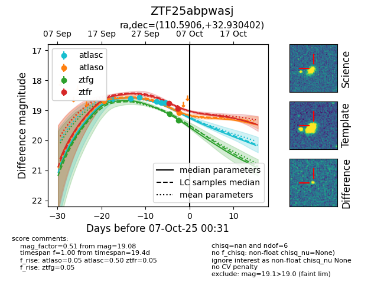
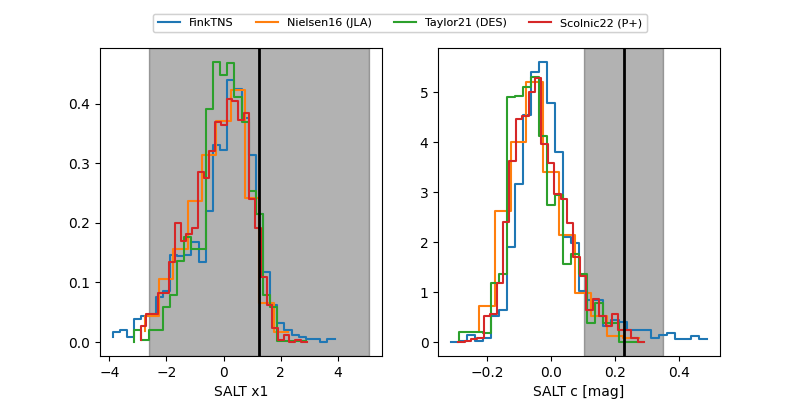

FINK: ZTF25abpwasj
Lasair: ZTF25abpwasj
ALeRCE: ZTF25abpwasj
ZTF25abpwasj (ztf,fink)
equatorial (ra, dec) = (110.5906,+32.93040)
galactic (l, b) = (185.4659,+20.38768)


last atlasc=18.74, atlaso=19.08, ztfg=19.34, ztfr=18.94
5 atlasc, 2 atlaso, 2 ztfg, 2 ztfr detections